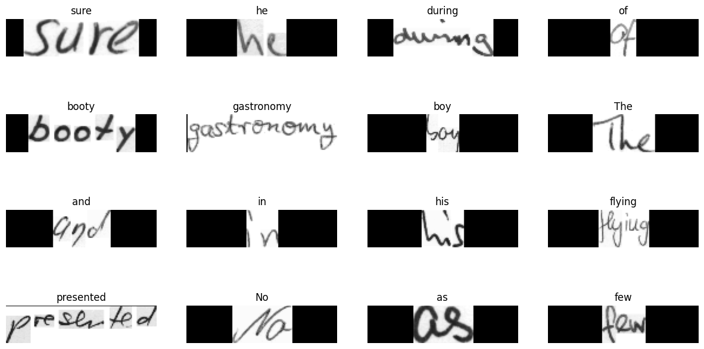
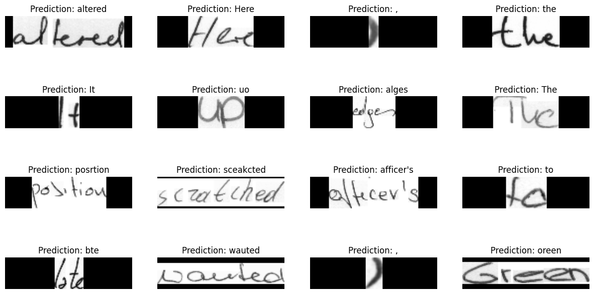

Handwriting recognition
Authors: A_K_Nain, Sayak Paul
Date created: 2021/08/16
Last modified: 2025/09/29
Description: Training a handwriting recognition model with variable-length sequences.

Introduction
This example shows how the Captcha OCR example can be extended to the IAM Dataset, which has variable length ground-truth targets. Each sample in the dataset is an image of some handwritten text, and its corresponding target is the string present in the image. The IAM Dataset is widely used across many OCR benchmarks, so we hope this example can serve as a good starting point for building OCR systems.
Data collection
!wget -q https://github.com/sayakpaul/Handwriting-Recognizer-in-Keras/releases/download/v1.0.0/IAM_Words.zip
!unzip -qq IAM_Words.zip
!
!mkdir data
!mkdir data/words
!tar -xf IAM_Words/words.tgz -C data/words
!mv IAM_Words/words.txt data
Preview how the dataset is organized. Lines prepended by "#" are just metadata information.
!head -20 data/words.txt
#--- words.txt ---------------------------------------------------------------#
#
# iam database word information
#
# format: a01-000u-00-00 ok 154 1 408 768 27 51 AT A
#
# a01-000u-00-00 -> word id for line 00 in form a01-000u
# ok -> result of word segmentation
# ok: word was correctly
# er: segmentation of word can be bad
#
# 154 -> graylevel to binarize the line containing this word
# 1 -> number of components for this word
# 408 768 27 51 -> bounding box around this word in x,y,w,h format
# AT -> the grammatical tag for this word, see the
# file tagset.txt for an explanation
# A -> the transcription for this word
#
a01-000u-00-00 ok 154 408 768 27 51 AT A
a01-000u-00-01 ok 154 507 766 213 48 NN MOVE
Imports
import keras
from keras.layers import StringLookup
from keras import ops
import matplotlib.pyplot as plt
import tensorflow as tf
import numpy as np
import os
np.random.seed(42)
keras.utils.set_random_seed(42)
Dataset splitting
base_path = "data"
words_list = []
words = open(f"{base_path}/words.txt", "r").readlines()
for line in words:
if line[0] == "#":
continue
if line.split(" ")[1] != "err": # We don't need to deal with errored entries.
words_list.append(line)
len(words_list)
np.random.shuffle(words_list)
We will split the dataset into three subsets with a 90:5:5 ratio (train:validation:test).
split_idx = int(0.9 * len(words_list))
train_samples = words_list[:split_idx]
test_samples = words_list[split_idx:]
val_split_idx = int(0.5 * len(test_samples))
validation_samples = test_samples[:val_split_idx]
test_samples = test_samples[val_split_idx:]
assert len(words_list) == len(train_samples) + len(validation_samples) + len(
test_samples
)
print(f"Total training samples: {len(train_samples)}")
print(f"Total validation samples: {len(validation_samples)}")
print(f"Total test samples: {len(test_samples)}")
Total training samples: 86810
Total validation samples: 4823
Total test samples: 4823
Data input pipeline
We start building our data input pipeline by first preparing the image paths.
base_image_path = os.path.join(base_path, "words")
def get_image_paths_and_labels(samples):
paths = []
corrected_samples = []
for i, file_line in enumerate(samples):
line_split = file_line.strip()
line_split = line_split.split(" ")
# Each line split will have this format for the corresponding image:
# part1/part1-part2/part1-part2-part3.png
image_name = line_split[0]
partI = image_name.split("-")[0]
partII = image_name.split("-")[1]
img_path = os.path.join(
base_image_path, partI, partI + "-" + partII, image_name + ".png"
)
if os.path.getsize(img_path):
paths.append(img_path)
corrected_samples.append(file_line.split("\n")[0])
return paths, corrected_samples
train_img_paths, train_labels = get_image_paths_and_labels(train_samples)
validation_img_paths, validation_labels = get_image_paths_and_labels(validation_samples)
test_img_paths, test_labels = get_image_paths_and_labels(test_samples)
Then we prepare the ground-truth labels.
# Find maximum length and the size of the vocabulary in the training data.
train_labels_cleaned = []
characters = set()
max_len = 0
for label in train_labels:
label = label.split(" ")[-1].strip()
for char in label:
characters.add(char)
max_len = max(max_len, len(label))
train_labels_cleaned.append(label)
characters = sorted(list(characters))
print("Maximum length: ", max_len)
print("Vocab size: ", len(characters))
# Check some label samples.
train_labels_cleaned[:10]
Maximum length: 21
Vocab size: 78
['sure',
'he',
'during',
'of',
'booty',
'gastronomy',
'boy',
'The',
'and',
'in']
Now we clean the validation and the test labels as well.
def clean_labels(labels):
cleaned_labels = []
for label in labels:
label = label.split(" ")[-1].strip()
cleaned_labels.append(label)
return cleaned_labels
validation_labels_cleaned = clean_labels(validation_labels)
test_labels_cleaned = clean_labels(test_labels)
Building the character vocabulary
Keras provides different preprocessing layers to deal with different modalities of data.
This guide provides a comprehensive introduction.
Our example involves preprocessing labels at the character
level. This means that if there are two labels, e.g. "cat" and "dog", then our character
vocabulary should be {a, c, d, g, o, t} (without any special tokens). We use the
StringLookup
layer for this purpose.
AUTOTUNE = tf.data.AUTOTUNE
# Mapping characters to integers.
char_to_num = StringLookup(vocabulary=list(characters), mask_token=None)
# Mapping integers back to original characters.
num_to_char = StringLookup(
vocabulary=char_to_num.get_vocabulary(), mask_token=None, invert=True
)
Resizing images without distortion
Instead of square images, many OCR models work with rectangular images. This will become clearer in a moment when we will visualize a few samples from the dataset. While aspect-unaware resizing square images does not introduce a significant amount of distortion this is not the case for rectangular images. But resizing images to a uniform size is a requirement for mini-batching. So we need to perform our resizing such that the following criteria are met:
- Aspect ratio is preserved.
- Content of the images is not affected.
def distortion_free_resize(image, img_size):
w, h = img_size
image = tf.image.resize(image, size=(h, w), preserve_aspect_ratio=True)
# Check tha amount of padding needed to be done.
pad_height = h - ops.shape(image)[0]
pad_width = w - ops.shape(image)[1]
# Only necessary if you want to do same amount of padding on both sides.
if pad_height % 2 != 0:
height = pad_height // 2
pad_height_top = height + 1
pad_height_bottom = height
else:
pad_height_top = pad_height_bottom = pad_height // 2
if pad_width % 2 != 0:
width = pad_width // 2
pad_width_left = width + 1
pad_width_right = width
else:
pad_width_left = pad_width_right = pad_width // 2
image = tf.pad(
image,
paddings=[
[pad_height_top, pad_height_bottom],
[pad_width_left, pad_width_right],
[0, 0],
],
)
image = ops.transpose(image, (1, 0, 2))
image = tf.image.flip_left_right(image)
return image
If we just go with the plain resizing then the images would look like so:

Notice how this resizing would have introduced unnecessary stretching.
Putting the utilities together
batch_size = 64
padding_token = 99
image_width = 128
image_height = 32
def preprocess_image(image_path, img_size=(image_width, image_height)):
image = tf.io.read_file(image_path)
image = tf.image.decode_png(image, 1)
image = distortion_free_resize(image, img_size)
image = ops.cast(image, tf.float32) / 255.0
return image
def vectorize_label(label):
label = char_to_num(tf.strings.unicode_split(label, input_encoding="UTF-8"))
length = ops.shape(label)[0]
pad_amount = max_len - length
label = tf.pad(label, paddings=[[0, pad_amount]], constant_values=padding_token)
return label
def process_images_labels(image_path, label):
image = preprocess_image(image_path)
label = vectorize_label(label)
return {"image": image, "label": label}
def prepare_dataset(image_paths, labels):
dataset = tf.data.Dataset.from_tensor_slices((image_paths, labels)).map(
process_images_labels, num_parallel_calls=AUTOTUNE
)
return dataset.batch(batch_size).cache().prefetch(AUTOTUNE)
Prepare tf.data.Dataset objects
train_ds = prepare_dataset(train_img_paths, train_labels_cleaned)
validation_ds = prepare_dataset(validation_img_paths, validation_labels_cleaned)
test_ds = prepare_dataset(test_img_paths, test_labels_cleaned)
Visualize a few samples
for data in train_ds.take(1):
images, labels = data["image"], data["label"]
_, ax = plt.subplots(4, 4, figsize=(15, 8))
for i in range(16):
img = images[i]
img = tf.image.flip_left_right(img)
img = ops.transpose(img, (1, 0, 2))
img = (img * 255.0).numpy().clip(0, 255).astype(np.uint8)
img = img[:, :, 0]
# Gather indices where label!= padding_token.
label = labels[i]
indices = tf.gather(label, tf.where(tf.math.not_equal(label, padding_token)))
# Convert to string.
label = tf.strings.reduce_join(num_to_char(indices))
label = label.numpy().decode("utf-8")
ax[i // 4, i % 4].imshow(img, cmap="gray")
ax[i // 4, i % 4].set_title(label)
ax[i // 4, i % 4].axis("off")
plt.show()

You will notice that the content of original image is kept as faithful as possible and has been padded accordingly.
Model
Our model will use the CTC loss as an endpoint layer. For a detailed understanding of the CTC loss, refer to this post.
class CTCLayer(keras.layers.Layer):
def __init__(self, name=None):
super().__init__(name=name)
self.loss_fn = tf.keras.backend.ctc_batch_cost
def call(self, y_true, y_pred):
batch_len = ops.cast(ops.shape(y_true)[0], dtype="int64")
input_length = ops.cast(ops.shape(y_pred)[1], dtype="int64")
label_length = ops.cast(ops.shape(y_true)[1], dtype="int64")
input_length = input_length * ops.ones(shape=(batch_len, 1), dtype="int64")
label_length = label_length * ops.ones(shape=(batch_len, 1), dtype="int64")
loss = self.loss_fn(y_true, y_pred, input_length, label_length)
self.add_loss(loss)
# At test time, just return the computed predictions.
return y_pred
def build_model():
# Inputs to the model
input_img = keras.Input(shape=(image_width, image_height, 1), name="image")
labels = keras.layers.Input(name="label", shape=(None,))
# First conv block.
x = keras.layers.Conv2D(
32,
(3, 3),
activation="relu",
kernel_initializer="he_normal",
padding="same",
name="Conv1",
)(input_img)
x = keras.layers.MaxPooling2D((2, 2), name="pool1")(x)
# Second conv block.
x = keras.layers.Conv2D(
64,
(3, 3),
activation="relu",
kernel_initializer="he_normal",
padding="same",
name="Conv2",
)(x)
x = keras.layers.MaxPooling2D((2, 2), name="pool2")(x)
# We have used two max pool with pool size and strides 2.
# Hence, downsampled feature maps are 4x smaller. The number of
# filters in the last layer is 64. Reshape accordingly before
# passing the output to the RNN part of the model.
new_shape = ((image_width // 4), (image_height // 4) * 64)
x = keras.layers.Reshape(target_shape=new_shape, name="reshape")(x)
x = keras.layers.Dense(64, activation="relu", name="dense1")(x)
x = keras.layers.Dropout(0.2)(x)
# RNNs.
x = keras.layers.Bidirectional(
keras.layers.LSTM(128, return_sequences=True, dropout=0.25)
)(x)
x = keras.layers.Bidirectional(
keras.layers.LSTM(64, return_sequences=True, dropout=0.25)
)(x)
# +2 is to account for the two special tokens introduced by the CTC loss.
# The recommendation comes here: https://git.io/J0eXP.
x = keras.layers.Dense(
len(char_to_num.get_vocabulary()) + 2, activation="softmax", name="dense2"
)(x)
# Add CTC layer for calculating CTC loss at each step.
output = CTCLayer(name="ctc_loss")(labels, x)
# Define the model.
model = keras.models.Model(
inputs=[input_img, labels], outputs=output, name="handwriting_recognizer"
)
# Optimizer.
opt = keras.optimizers.Adam()
# Compile the model and return.
model.compile(optimizer=opt)
return model
# Get the model.
model = build_model()
model.summary()
Model: "handwriting_recognizer"
┏━━━━━━━━━━━━━━━━━━━━━┳━━━━━━━━━━━━━━━━━━━┳━━━━━━━━━━━━┳━━━━━━━━━━━━━━━━━━━┓ ┃ Layer (type) ┃ Output Shape ┃ Param # ┃ Connected to ┃ ┡━━━━━━━━━━━━━━━━━━━━━╇━━━━━━━━━━━━━━━━━━━╇━━━━━━━━━━━━╇━━━━━━━━━━━━━━━━━━━┩ │ image (InputLayer) │ (None, 128, 32, │ 0 │ - │ │ │ 1) │ │ │ ├─────────────────────┼───────────────────┼────────────┼───────────────────┤ │ Conv1 (Conv2D) │ (None, 128, 32, │ 320 │ image[0][0] │ │ │ 32) │ │ │ ├─────────────────────┼───────────────────┼────────────┼───────────────────┤ │ pool1 │ (None, 64, 16, │ 0 │ Conv1[0][0] │ │ (MaxPooling2D) │ 32) │ │ │ ├─────────────────────┼───────────────────┼────────────┼───────────────────┤ │ Conv2 (Conv2D) │ (None, 64, 16, │ 18,496 │ pool1[0][0] │ │ │ 64) │ │ │ ├─────────────────────┼───────────────────┼────────────┼───────────────────┤ │ pool2 │ (None, 32, 8, 64) │ 0 │ Conv2[0][0] │ │ (MaxPooling2D) │ │ │ │ ├─────────────────────┼───────────────────┼────────────┼───────────────────┤ │ reshape (Reshape) │ (None, 32, 512) │ 0 │ pool2[0][0] │ ├─────────────────────┼───────────────────┼────────────┼───────────────────┤ │ dense1 (Dense) │ (None, 32, 64) │ 32,832 │ reshape[0][0] │ ├─────────────────────┼───────────────────┼────────────┼───────────────────┤ │ dropout (Dropout) │ (None, 32, 64) │ 0 │ dense1[0][0] │ ├─────────────────────┼───────────────────┼────────────┼───────────────────┤ │ bidirectional │ (None, 32, 256) │ 197,632 │ dropout[0][0] │ │ (Bidirectional) │ │ │ │ ├─────────────────────┼───────────────────┼────────────┼───────────────────┤ │ bidirectional_1 │ (None, 32, 128) │ 164,352 │ bidirectional[0]… │ │ (Bidirectional) │ │ │ │ ├─────────────────────┼───────────────────┼────────────┼───────────────────┤ │ label (InputLayer) │ (None, None) │ 0 │ - │ ├─────────────────────┼───────────────────┼────────────┼───────────────────┤ │ dense2 (Dense) │ (None, 32, 81) │ 10,449 │ bidirectional_1[… │ ├─────────────────────┼───────────────────┼────────────┼───────────────────┤ │ ctc_loss (CTCLayer) │ (None, 32, 81) │ 0 │ label[0][0], │ │ │ │ │ dense2[0][0] │ └─────────────────────┴───────────────────┴────────────┴───────────────────┘
Total params: 424,081 (1.62 MB)
Trainable params: 424,081 (1.62 MB)
Non-trainable params: 0 (0.00 B)
Evaluation metric
Edit Distance is the most widely used metric for evaluating OCR models. In this section, we will implement it and use it as a callback to monitor our model.
We first segregate the validation images and their labels for convenience.
validation_images = []
validation_labels = []
for batch in validation_ds:
validation_images.append(batch["image"])
validation_labels.append(batch["label"])
Now, we create a callback to monitor the edit distances.
def calculate_edit_distance(labels, predictions):
# Get a single batch and convert its labels to sparse tensors.
saprse_labels = ops.cast(tf.sparse.from_dense(labels), dtype=tf.int64)
# Make predictions and convert them to sparse tensors.
input_len = np.ones(predictions.shape[0]) * predictions.shape[1]
predictions_decoded = keras.ops.nn.ctc_decode(
predictions, sequence_lengths=input_len
)[0][0][:, :max_len]
sparse_predictions = ops.cast(
tf.sparse.from_dense(predictions_decoded), dtype=tf.int64
)
# Compute individual edit distances and average them out.
edit_distances = tf.edit_distance(
sparse_predictions, saprse_labels, normalize=False
)
return tf.reduce_mean(edit_distances)
class EditDistanceCallback(keras.callbacks.Callback):
def __init__(self, pred_model):
super().__init__()
self.prediction_model = pred_model
def on_epoch_end(self, epoch, logs=None):
edit_distances = []
for i in range(len(validation_images)):
labels = validation_labels[i]
predictions = self.prediction_model.predict(validation_images[i])
edit_distances.append(calculate_edit_distance(labels, predictions).numpy())
print(
f"Mean edit distance for epoch {epoch + 1}: {np.mean(edit_distances):.4f}"
)
Training
Now we are ready to kick off model training.
epochs = 10 # To get good results this should be at least 50.
model = build_model()
prediction_model = keras.models.Model(
model.get_layer(name="image").output, model.get_layer(name="dense2").output
)
edit_distance_callback = EditDistanceCallback(prediction_model)
# Train the model.
history = model.fit(
train_ds,
validation_data=validation_ds,
epochs=epochs,
callbacks=[edit_distance_callback],
)
Epoch 1/10
1357/1357 ━━━━━━━━━━━━━━━━━━━━ 216s 157ms/step - loss: 1068.7206 - val_loss: 762.4462
Epoch 2/10
1357/1357 ━━━━━━━━━━━━━━━━━━━━ 215s 158ms/step - loss: 735.8929 - val_loss: 627.9722
Epoch 3/10
1357/1357 ━━━━━━━━━━━━━━━━━━━━ 211s 155ms/step - loss: 624.9929 - val_loss: 540.8905
Epoch 4/10
1357/1357 ━━━━━━━━━━━━━━━━━━━━ 208s 153ms/step - loss: 544.2097 - val_loss: 446.0919
Epoch 5/10
1357/1357 ━━━━━━━━━━━━━━━━━━━━ 213s 157ms/step - loss: 459.0329 - val_loss: 347.1689
Epoch 6/10
1357/1357 ━━━━━━━━━━━━━━━━━━━━ 210s 155ms/step - loss: 378.6367 - val_loss: 287.1726
Epoch 7/10
1357/1357 ━━━━━━━━━━━━━━━━━━━━ 211s 155ms/step - loss: 325.4126 - val_loss: 250.3677
Epoch 8/10
1357/1357 ━━━━━━━━━━━━━━━━━━━━ 209s 154ms/step - loss: 289.2796 - val_loss: 224.4595
Epoch 9/10
1357/1357 ━━━━━━━━━━━━━━━━━━━━ 209s 154ms/step - loss: 264.0461 - val_loss: 205.5910
Epoch 10/10
1357/1357 ━━━━━━━━━━━━━━━━━━━━ 208s 153ms/step - loss: 245.5216 - val_loss: 195.7952
Inference
# A utility function to decode the output of the network.
def decode_batch_predictions(pred):
input_len = np.ones(pred.shape[0]) * pred.shape[1]
# Use greedy search. For complex tasks, you can use beam search.
results = keras.ops.nn.ctc_decode(pred, sequence_lengths=input_len)[0][0][
:, :max_len
]
# Iterate over the results and get back the text.
output_text = []
for res in results:
res = tf.gather(res, tf.where(tf.math.not_equal(res, -1)))
res = (
tf.strings.reduce_join(num_to_char(res))
.numpy()
.decode("utf-8")
.replace("[UNK]", "")
)
output_text.append(res)
return output_text
# Let's check results on some test samples.
for batch in test_ds.take(1):
batch_images = batch["image"]
_, ax = plt.subplots(4, 4, figsize=(15, 8))
preds = prediction_model.predict(batch_images)
pred_texts = decode_batch_predictions(preds)
for i in range(16):
img = batch_images[i]
img = tf.image.flip_left_right(img)
img = ops.transpose(img, (1, 0, 2))
img = (img * 255.0).numpy().clip(0, 255).astype(np.uint8)
img = img[:, :, 0]
title = f"Prediction: {pred_texts[i]}"
ax[i // 4, i % 4].imshow(img, cmap="gray")
ax[i // 4, i % 4].set_title(title)
ax[i // 4, i % 4].axis("off")
plt.show()

To get better results the model should be trained for at least 50 epochs.
Final remarks
- The
prediction_modelis fully compatible with TensorFlow Lite. If you are interested, you can use it inside a mobile application. You may find this notebook to be useful in this regard. - Not all the training examples are perfectly aligned as observed in this example. This can hurt model performance for complex sequences. To this end, we can leverage Spatial Transformer Networks (Jaderberg et al.) that can help the model learn affine transformations that maximize its performance.